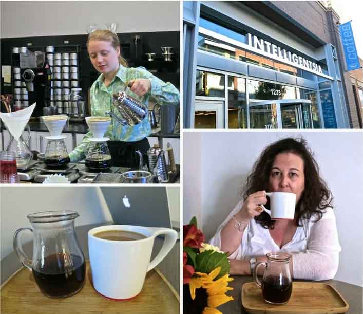
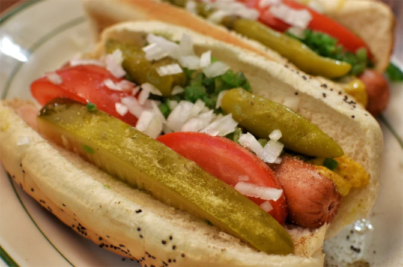

Famous food in Chicago
We knew that the food would be good, but we were still blown away by the food quality at all price points.
We’ve already written about some of our excellent restaurant meals, but we also loved accessible local food like Chi dogs,
popcorn and donuts.Even the local outpost of Eataly has its own twist, not to mention an enviable selection of fresh produce. Seriously, eating is one of the best things to do in Chicago. It is one of the best food cities in America after all.

Experiencing genuine stuffed deep-dish pizza alone is reason enough to visit Chicago, but there is plenty of great food on offer. Alongside many great restaurants and bars, other local specialties include dripping Italian beef sandwiches loaded with sweet peppers and giardiniera, Chicago-style hot dogs, and popcorn, with the city’s favorite a mix of caramel and cheese corn. Just don’t call it Chicago mix—a company in St. Paul, Minnesota copyrighted that combination.
